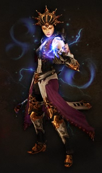
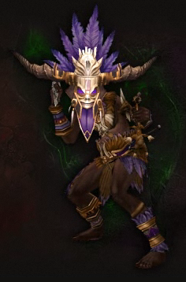
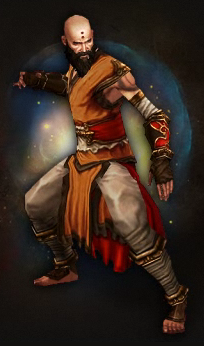
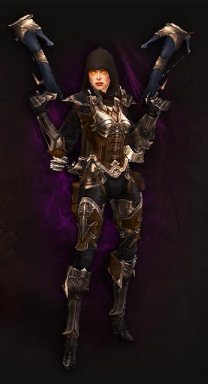
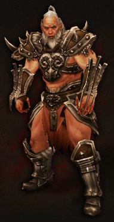

Diablo III(){
Games
Por: Guilherme Castilho Casassanta
Diablo III
Diablo III, desenvolvido pela Blizzard Entertainment é um dos jogos mais esperado nos últimos anos. Neste ano, a Blizzard no seu evento BlizzCon exibiu um preview do jogo durante o evento e informou que o jogo ja está próximo de ser lançado, provavelmente no final deste ano, uma vez que o Beta do jogo já começou.
O jogo se trata de um MMORPG ( Massively multiplayer Online Role-Playing Game ), ou seja, um jogo onde você pode conectar à internet e jogar com outros jogadores em tempo real, ou jogar fora da rede.
Classes e Personagens
As classes são os tipos de personagens que podemos escolher para a aventura no mundo de Diablo III. Nesta edição do jogo temos definidas 6 classes diferentes:

Arcanistas (Wizard) : São os magos renegados do Diablo III. São capazes de manipular as forças da natureza para desintegrar, queimar ou congelar inimigos, ou até para ter controle do tempo. São capazes de refletir ataques de inimigos e criar ilusões para defesa.
Os arcanistas possuem como uma arma forte sua própria magia, porém como em diversos jogos de RPG, ela é finita e deve ser recuperada. Para quando há ausência de força, existem as varinhas mágicas e cajados que servem para lançar as magias menos relevantes. São, normalmente, guerreiros de longa distância, pois em relação à outros guerreiros, sua prioridade está sobre o ataque.

Feiticeiros (Witch-Doctor): São os guerreiros espirituais do Diablo III. São capazes de manipular as forças vitais como evocação de almas de mortos e criaturas para auxiliá-lo. Usam magias como lançamento de crânios explosivos, nuvens de veneno, campos de fogo, drenagens de vida e maldições letais. Em campos de batalhas, são capazes de infectar e paralizar um grande contingente de inimigos. Seu objetivo é tornar os alvos cada vez mais vulneráveis a grandes ataques, quebrando a capacidade defensiva dos adversários.

Monges (Monk): São os guerreiros sagrados do Diablo III. Tem uma grande diferença entre os demais guerreiros. São responsáveis pela cura, mantras de proteção e ataques impulsionados por forças divinas. São capazes de realizar golpes de curto alcance com muita rapidez e eficiência, podem utilizar armas ou os próprios punhos. Sua habilidade maior é com a agilidade em vez da força bruta, são muito rápidos defensivamente em relação aos ataques corpo-a-corpo. São capazes de eliminar oponentes individualmente com muita eficiência através de ataques com ondas poder elemental emitidas pelas próprias palmas de suas mãos.

Caçador de Demônios (Demon Hunter): São os guerreiros atiradores do Diablo III. Utilizam armas de mira à distância como arcos, projéteis explosivos e armadilhas mortais. São capazes de em pouco tempo varrer áreas inteiras com rajadas de projéteis lançados. Também possuem habilidades de disparos em curta distância, sendo esses letais e rápidos, permitindo que o guerreiro retroceda para ganhar mais segurança para disparos. Estes guerreiros são vulneráveis caso sejam encurralados por inimigos. Possuem ataques que deixam oponentes lentos e confusos para ganharem tempo de defesa.

Bárbaro (Barbarian): São os guerreiros de luta corpo-a-corpo do Diablo III. Se caracterizam pelo tamanho e pela força em relação aos demais. São capazes de manusear armas pesadas e realizar golpes devastadores, utilizando quaisquer tipos de táticas. Diferente dos Caçadores de Demônios, são guerreiros muito resistentes à ataques em que ficam encurralados. Os Bárbaros podem eliminar inimigos mais fracos com ataques rápidos e ferozes em poucos segundos, enquanto seus ataques mais lentos e devastadores são destinados ao impedimento do avanço das tropas inimigas e quebrar armaduras dos oponentes mais resistentes.
}